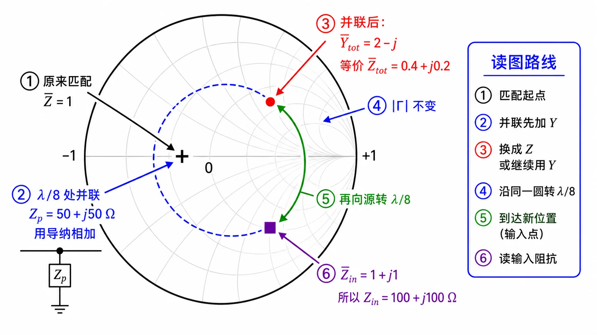

第二次作业 · Lec08–09 · 第 3 题§
对应知识点：03-并联支节匹配
导航： 总目录 · 符号与导读 · Lec08–09 总册 · Lec06 · Lec07 · 附录
第 3 题§
（对应大纲 Lec08–09 作业 第 3 题；该讲教材章节 §1.6。）
题目复述§
$Z_c=100\,\Omega$，终端匹配。在距终端 $\lambda/8$ 处并联 $(50+\mathrm{j}50)\,\Omega$，求距终端 $\lambda/4$ 处的输入阻抗。
详细思路§
工程/物理目标：在 已匹配 的长线上某截面 并联 集总阻抗，求 另一截面 的输入阻抗——工程上对应「匹配链路上并接元件后，下游/上游端口阻抗如何变」；并联结点必须用导纳或并联公式，再 分段 用传输线公式。
- 匹配终端：在并联点前，向负载看仍为 $Z_c$。
- 并联：先用导纳相加，或 $Z_{\mathrm{par}}=\dfrac{Z_a Z_b}{Z_a+Z_b}$。
- 再经一段线用 $Z_{\mathrm{in}}$ 公式向源变换。
思路叙述：
以负载为 $z=0$：$0\to\lambda/8$ 点匹配故 $Z=Z_c$；在该点并上 $Z_p$；再从该点到 $\lambda/4$ 又走 $\lambda/8$。
解法一：公式（解析）§
一步步解答§
步骤 1 在 $\lambda/8$ 处并联前，$Z^-=Z_c=100\,\Omega$。
步骤 2 并联 $Z_p=50+\mathrm{j}50\,\Omega$：
$$ \frac{1}{50+\mathrm{j}50}=\frac{50-\mathrm{j}50}{50^2+50^2}=\frac{50-\mathrm{j}50}{5000}=0.01-\mathrm{j}0.01\,\mathrm{S}, $$
$$ Y_{\mathrm{tot}}=\frac{1}{100}+\frac{1}{50+\mathrm{j}50}=0.01+(0.01-\mathrm{j}0.01)=0.02-\mathrm{j}0.01\,\mathrm{S},\quad Z_{\mathrm{tot}}=\frac{1}{Y_{\mathrm{tot}}}=\frac{0.02+\mathrm{j}0.01}{0.02^2+0.01^2}=40+\mathrm{j}20\,\Omega. $$
步骤 3 从并联点到「距终端 $\lambda/4$」还须向源走 $\Delta z=\lambda/8$，$\beta\Delta z=\pi/4$，$\tan\beta\Delta z=1$：
$$ Z_{\mathrm{in}}=Z_c\,\frac{Z_{\mathrm{tot}}+\mathrm{j}Z_c\tan(\beta\Delta z)}{Z_c+\mathrm{j}Z_{\mathrm{tot}}\tan(\beta\Delta z)} =100\cdot\frac{40+\mathrm{j}20+\mathrm{j}100}{100+\mathrm{j}(40+\mathrm{j}20)} =100\cdot\frac{40+\mathrm{j}120}{80+\mathrm{j}40}. $$
化简：分子分母同除 $40$，再 分子分母同乘 $(2-\mathrm{j})$：
$$ Z_{\mathrm{in}}=100\cdot\frac{1+\mathrm{j}3}{2+\mathrm{j}} =100\cdot\frac{(1+\mathrm{j}3)(2-\mathrm{j})}{5} =100\cdot\frac{5+\mathrm{j}5}{5}=(100+\mathrm{j}100)\,\Omega. $$
标准解答§
-
$Z_{\mathrm{in}}=(100+\mathrm{j}100)\,\Omega$。
-
检验/注意： 分段：匹配段 → 并联破坏匹配 → 再变换；导纳法在并联处往往更省事。
解法二：圆图（Smith）§

图：在阻抗 $\Gamma$ 平面上画 $\bar Z_{\mathrm{tot}}$ 与旋转；亦可用 $\bar Y_{\mathrm{tot}}=2-\mathrm{j}$ 在导纳图上核对为同一点。
读图说明（零基础）
- 并联这一步：在 导纳面 上最直观——$\bar Y$ 相加；与 $\bar Z$ 是 同一点 的两种坐标，不要当成两个物理位置。
- 圆心：匹配点 $\bar Z=\bar Y=1$（本题在并联前）。
- 并联后点：$\bar Y_{\mathrm{tot}}=2-\mathrm{j}$ 或 $\bar Z_{\mathrm{tot}}=0.4+\mathrm{j}0.2$；图上应在 等 $\|\Gamma\|$ 圆 上离开圆心。
- 再转 $\lambda/8$：沿 等 $\|\Gamma\|$ 圆 向源顺时针 走 $0.125\lambda$，读 $\bar Z_{\mathrm{in}}$ 或先读 $\bar Y_{\mathrm{in}}$ 再取倒数。
- 自检：结果应为 $\bar Z_{\mathrm{in}}=1+\mathrm{j}1$，即 $(100+\mathrm{j}100)\,\Omega$。
圆图操作步骤
- 距终端 $\lambda/8$ 截面：匹配终端故 $\bar Z=1$，在阻抗圆图为 圆心；换到 导纳圆图 亦为 $\bar Y=1$（同一点）。
- 并联 $Z_p=50+\mathrm{j}50\,\Omega$：算 $\bar Y_p=Y_p Z_c$，与 $\bar Y=1$ 代数相加得结点 $\bar Y_{\mathrm{tot}}=2-\mathrm{j}$（与 $\bar Z_{\mathrm{tot}}=0.4+\mathrm{j}0.2$ 互为倒数）；在导纳圆图上最省事是 算 $\bar Y_{\mathrm{tot}}$ 后直接在图上标出该点。
- 从 $\bar Y_{\mathrm{tot}}$ 出发，沿 等 $|\Gamma|$ 圆 向源（顺时针） 再转 $\lambda/8$，读 $\bar Y_{\mathrm{in}}$，再 $Z_{\mathrm{in}}=\bar Y_{\mathrm{in}}^{-1}\,Z_c$，应与 $(100+\mathrm{j}100)\,\Omega$ 一致（亦可在阻抗图上从 $\bar Z_{\mathrm{tot}}=0.4+\mathrm{j}0.2$ 转 $\lambda/8$ 读 $\bar Z_{\mathrm{in}}$）。
常见疑惑点§
- 疑惑： 「终端匹配」到底指什么？解答： 指传输线负载端接匹配负载，使在并联支路接入之前、沿线的入射端看负载为 $Z_L=Z_c$；本题在 $\lambda/8$ 截面向负载看仍为 $Z_c$。
- 疑惑： 从 $\lambda/8$ 到 $\lambda/4$ 为什么又是 $\lambda/8$ 线长？解答： 距终端 $\lambda/4$ 与距终端 $\lambda/8$ 相差 $\lambda/4-\lambda/8=\lambda/8$，故第二段用 $Z_{\mathrm{in}}$ 公式时取 $l=\lambda/8$。
- 疑惑： 并联为什么用 $Y$ 相加而不是 $Z$ 直接相加？解答： 并联支路电压相同，用导纳相加最直接；亦可用 $Z_{\mathrm{par}}=Z_a Z_b/(Z_a+Z_b)$，与导纳法等价。
同讲各题：1 · 2 · 3 · 4 · 5 · 6 · 7
返回总册：Lec08–09 总册